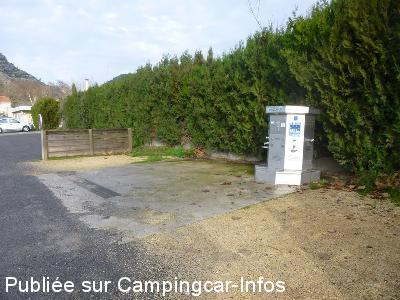
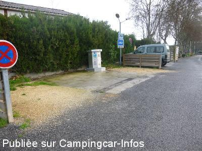
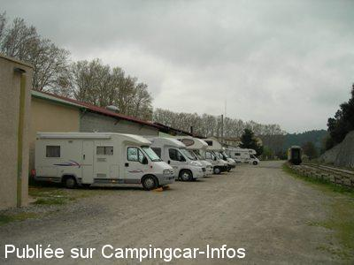

ASN = Aire de services avec stationnement nuit possible de :
ANDUZE
(N° 145)
Accès/adresse :
Avenue du Pasteur Rollin
Place de la Gare
30140 ANDUZE
Place de la Gare
30140 ANDUZE
Latitude : (Nord) 44.05° Décimaux ou 44° 2′ 59′′
Longitude : (Est) 3.98444° Décimaux ou 3° 59′ 3′′
Tarif : 2015
Stationnement gratuit
Eau 10 mn et/ou électricité 55 mn : 2 €
Paiement par monnayeur
Type de borne : AIRESERVICES
Services :


Autres informations :
Ouvert toute l'année
20 emplacements C-C

Le 02/01/2016 par Fanfan

Le 02/01/2016 par Fanfan

Le 10/04/2011 par guy83
de
Fanfan
le 02/01/2016 :
Bonjour,
Il n'y a pas d'électricité sur l'aire proprement dite mais sur la borne : 1 pièce de 2 € pour 10 minutes d'eau et 55 minutes d'électricité.
L'aménagement de cette aire a été totalement refait. Les vingt places de stationnement le long du mur de la fabrique de poterie et non à partager avec les voitures. Le parking devant la gare est réservé aux visiteurs du petit train des Cévennes. Seule la photo de Guy de 2011 est valable
Bonjour,
Il n'y a pas d'électricité sur l'aire proprement dite mais sur la borne : 1 pièce de 2 € pour 10 minutes d'eau et 55 minutes d'électricité.
L'aménagement de cette aire a été totalement refait. Les vingt places de stationnement le long du mur de la fabrique de poterie et non à partager avec les voitures. Le parking devant la gare est réservé aux visiteurs du petit train des Cévennes. Seule la photo de Guy de 2011 est valable
de
Jean-Pierre
le 14/05/2015 :
Passé le 2 mai 2015. Espace réservé aux CC occupé donc, partage du parking avec les voitures et mise en attente du retour du train pour disposer de place. Aire poussièreuse mais calme. Techniques peu pratiques.
Passé le 2 mai 2015. Espace réservé aux CC occupé donc, partage du parking avec les voitures et mise en attente du retour du train pour disposer de place. Aire poussièreuse mais calme. Techniques peu pratiques.
de
christiane74
le 07/08/2014 :
de passage lundi 4 8 2014, borne de services en état de marche, aire un peu poussiéreux certes mais idéalement situé, à 2 pas du centre ville, très animé, et au départ du train des Cévennes, arrêt en route permettant de visiter la Bambouseraie, et le mardi voir le marché de st jean du gard,
de passage lundi 4 8 2014, borne de services en état de marche, aire un peu poussiéreux certes mais idéalement situé, à 2 pas du centre ville, très animé, et au départ du train des Cévennes, arrêt en route permettant de visiter la Bambouseraie, et le mardi voir le marché de st jean du gard,
de
Advieu
le 25/08/2013 :
Au 20/08/2013, la borne fonctionne ! 2€ pour les services.
De la place, certes, pour de nombreux CC. Mais demanderais à être mieux agencée.
Au 20/08/2013, la borne fonctionne ! 2€ pour les services.
De la place, certes, pour de nombreux CC. Mais demanderais à être mieux agencée.
de
mondon
le 02/07/2013 :
venant s'installer,vue l'état de cette, aire(02/07/2013) poussiereuse,pas d'ombre,borne hs.
venant s'installer,vue l'état de cette, aire(02/07/2013) poussiereuse,pas d'ombre,borne hs.
de
Denis02
le 01/05/2013 :
De passage le 24/04/2013, la borne est HS. Il est seulement possible de vidanger. Je suis monté à St Jean du Gard, à 14 km, pour faire le plein d'eau gratuit et les vidanges dans de meilleures conditions.
De passage le 24/04/2013, la borne est HS. Il est seulement possible de vidanger. Je suis monté à St Jean du Gard, à 14 km, pour faire le plein d'eau gratuit et les vidanges dans de meilleures conditions.
de
Catherine
le 16/12/2012 :
Bonjour à tous.
De passage le 13 août 2012 - juste DE PASSAGE !
chaleur, anarchie, poussière +++, borne inaccessible coincée entre les voitures, parking réservé aux camping-cars le long du bâtiment également occupé par les voitures des touristes qui prennent le petit train Cévenol et coincent éventuellement ceux qui veulent repartir car impossibilité de manoeuvrer, places pour handicapés également occupées par des valides... ! Bref le rêve !!!
Nous comptions nous arrêter et aller visiter la Bambouseraie.
Nous sommes repartis aussitôt, dégoûtés !
A EVITER !!!
Bonjour à tous.
De passage le 13 août 2012 - juste DE PASSAGE !
chaleur, anarchie, poussière +++, borne inaccessible coincée entre les voitures, parking réservé aux camping-cars le long du bâtiment également occupé par les voitures des touristes qui prennent le petit train Cévenol et coincent éventuellement ceux qui veulent repartir car impossibilité de manoeuvrer, places pour handicapés également occupées par des valides... ! Bref le rêve !!!
Nous comptions nous arrêter et aller visiter la Bambouseraie.
Nous sommes repartis aussitôt, dégoûtés !
A EVITER !!!
de
Pierrot 14
le 11/11/2012 :
De passage dans la nuit du 25 au 26 Octobre 2012 , nous avons trouvé une aire sale ( sacs a poubelle déposés contre les murs ),derrière un mur d'usine , devant les rails et un mur , sur le passage devant les camping cars,c'est un chemin ou passent les voitures que dire de la sécurité et de la poussière !
La borne était inaccessible un tas de cailloux était déposé devant
Une aire a éviter
De passage dans la nuit du 25 au 26 Octobre 2012 , nous avons trouvé une aire sale ( sacs a poubelle déposés contre les murs ),derrière un mur d'usine , devant les rails et un mur , sur le passage devant les camping cars,c'est un chemin ou passent les voitures que dire de la sécurité et de la poussière !
La borne était inaccessible un tas de cailloux était déposé devant
Une aire a éviter
de
brigitte
le 14/04/2012 :
de passage le 14 avril, stationnement derriere les batiments municipaux, a deux pas du centre ville.
joli petit village commerçants aceuillants,
vidange WC et eaux grise possible, borne HS !! dommage car la municipalité avait bien commencé en prevoyant cette enplacement, nuit calme.
manque de civisme de certains campingcariste qui font faire les besoins de leurs chien sans rien ramasser alors que la municipalité a mis en place des bornes avec poches.
ou qui jetent les bassines d'eau de leur vaiselle...
avant de critiquer pensez a revoir votre façon de vous comporter.
brigitte
de passage le 14 avril, stationnement derriere les batiments municipaux, a deux pas du centre ville.
joli petit village commerçants aceuillants,
vidange WC et eaux grise possible, borne HS !! dommage car la municipalité avait bien commencé en prevoyant cette enplacement, nuit calme.
manque de civisme de certains campingcariste qui font faire les besoins de leurs chien sans rien ramasser alors que la municipalité a mis en place des bornes avec poches.
ou qui jetent les bassines d'eau de leur vaiselle...
avant de critiquer pensez a revoir votre façon de vous comporter.
brigitte
de
bruno
le 06/09/2011 :
comme les commentaires précédent, aire poussiereuse non respect des vehicule de tourismes qui se gare sur les peu d'emplacements disponibles, borne hs , vidange impossible voiture stationnée dessus , nous somme rabattus sur caming domaine de gaujac.
comme les commentaires précédent, aire poussiereuse non respect des vehicule de tourismes qui se gare sur les peu d'emplacements disponibles, borne hs , vidange impossible voiture stationnée dessus , nous somme rabattus sur caming domaine de gaujac.
de
sagnet
le 09/05/2011 :
de passage sur cette aire de service le 7 et 8 mai
ce n est pas pensable d êtres accueillis dans des conditions aussi es
désastreuses une poussière de castine que font voler certaines voitures sans scrupule
faut garder glaces fermées mal grès la chaleur
et cerise sur le gâteau pas d eau la machine bien cerclée de cadenas pour garder le 2euro demander.
dommage bien placée; l idée et très bonne; mais l état des lieux zéro
dommage une ville comme celle la avec le train la bambouseraie et la ville
la municipalité doit beaucoups mieux faire
de passage sur cette aire de service le 7 et 8 mai
ce n est pas pensable d êtres accueillis dans des conditions aussi es
désastreuses une poussière de castine que font voler certaines voitures sans scrupule
faut garder glaces fermées mal grès la chaleur
et cerise sur le gâteau pas d eau la machine bien cerclée de cadenas pour garder le 2euro demander.
dommage bien placée; l idée et très bonne; mais l état des lieux zéro
dommage une ville comme celle la avec le train la bambouseraie et la ville
la municipalité doit beaucoups mieux faire
de
Michel
le 22/08/2010 :
Deux jours et deux nuits tranquilles malgré un grand nombre de camping-cars. Merci à la municipalité d'Anduze qui en offrant ses services, fait sans aucun doute travailler ses commerçants.
Deux jours et deux nuits tranquilles malgré un grand nombre de camping-cars. Merci à la municipalité d'Anduze qui en offrant ses services, fait sans aucun doute travailler ses commerçants.